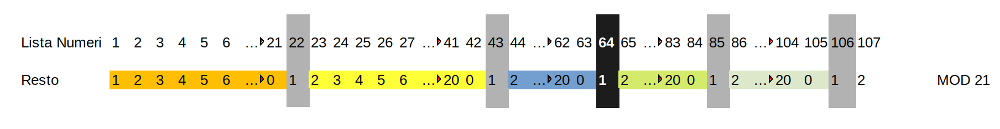
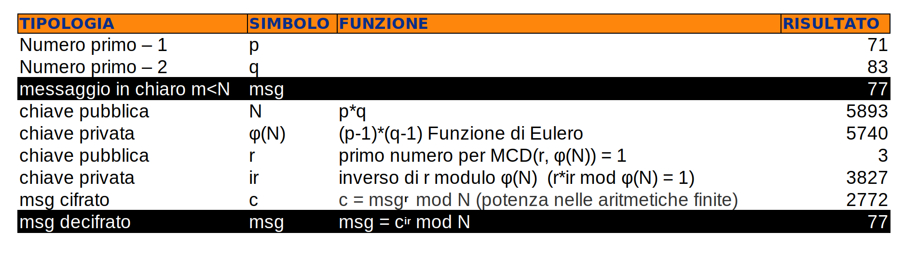
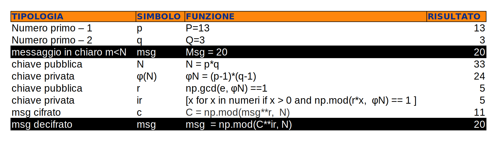
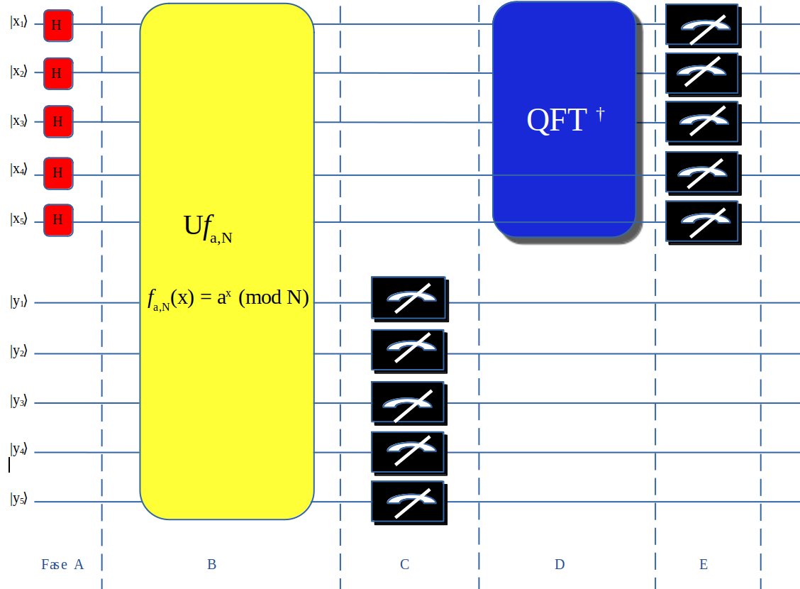
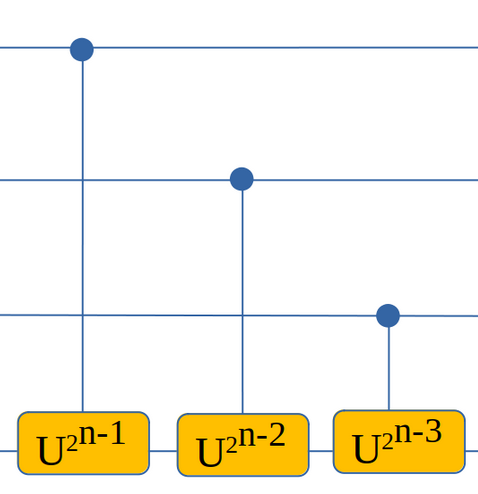
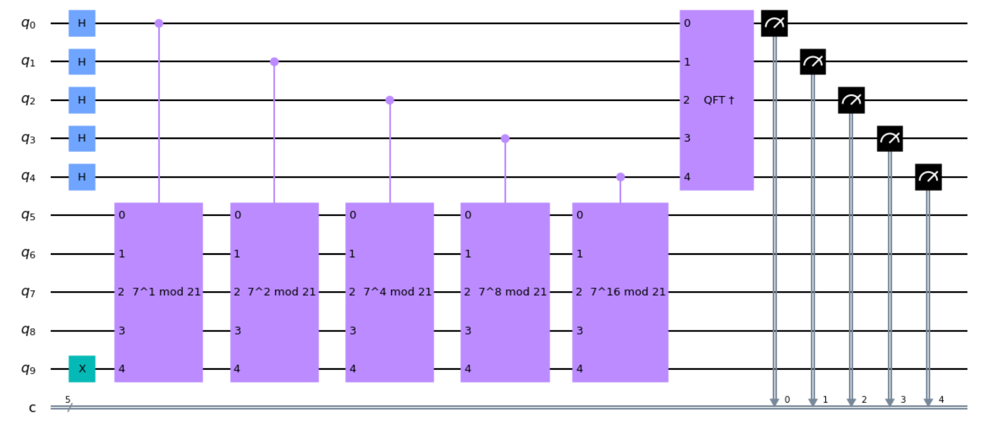

SHOR's Algorithm
Questo algoritmo si utilizza per la fattorizzazione di un numero intero cioè trovare i 2 numeri(fattori) il cui prodotto è il risultato della
moltiplicazione dei 2 fattori. Dato il numero N = p * q dove p e q sono numeri primi con lo Shor algorithm troviamo p e q.
L'algoritmo classico impiega un tempo di `O(exp(n^(1/3))` mentre con lo Shor quantum algorithm si impiega `O(n^2logn)`.
Prima di analizzare l'algoritmo vediamo la base matematica.
Partiamo dal modulo aritmetico.
Nella divisione di 2 numeri abbiamo il quoziente
ed il resto ad esempio se facciamo `20/3` abbiamo 6 come quoziente e 2 come resto e si può rappresentare
come `20 ≡ 2 (mod 6)` cioè `a ≡ b (mod n)`.

Nell'immagine sovrastante vediamo in sequenza il resto per ogni numero che viene diviso per 21 (modulo 21).
La base di partenza per trovare p e q è la funzione periodica seguente
`f(x)=a^xmodN`
dove a e N
sono interi positivi con `1 < a < N` e non devono avere fattori in comune.
Questa funzione è utile per trovare il periodo chiamato anche order r che è il più piccolo numero diverso da zero
tale che
`a^rmodN=1`
quindi
`a^r = 1 modN`
Con questa formula inizia il procedimento di ricerca di r.
Si inizia dalla selezione di un valore di a compreso tra {2..N-1}
In python il resto si trova con la seguente operazione np.mod(a**x, N) con x in {1,2,3 ... } r è uguale alla x che ci restituisce resto 1.
Troveremo diversi x che ci restituisce 1 ma si prende il più piccolo e si lasciano i successivi.
Nell'esempio sottostante con N=21 ed a=2 troviamo r = 6 perchè 2
6 = 64 che diviso 21 fornisce come resto 1.
Vediamo nel dettaglio i valori restititi con la funzione mod con a=2 ed x da {1 a 12}
np.mod(2**1, 21) = 2
np.mod(2**2, 21) = 4
np.mod(2**3, 21) = 8
np.mod(2**4, 21) = 16
np.mod(2**5, 21) = 11
np.mod(2**6, 21) = 1
np.mod(2**7, 21) = 2
np.mod(2**8, 21) = 4
np.mod(2**9, 21) = 8
np.mod(2**10, 21) = 16
np.mod(2**11, 21) = 11
np.mod(2**12, 21) = 1
I grafici sottostanti riproducono i risultati ottenuti con la periodicità visibille nei casi di N = 21 che si
ripete per i valori di x uguale a 6, 12 e 18 dove r = 6, p = 3, q = 5 e N = 143 con r = 20 p = 13 e q = 11.
Se r è un numero pari e r+1 ≠ 0 (mod N) procediamo altrimenti selezionare una nuova a e ripetere le operazioni precedenti.
Trovata la r cioè la periodicità passiamo ora a trovare p e q.
Calcoliamo p = MCD(a
r/2+1,N) e q = MCD(a
r/2-1,N) dove MCD è il massimo comun divisore in inglese gcd.
Da notare che solo la ricerca delle periodicità r viene eseguita come operazione quantistica perchè le altre operazioni sono
le stesse che si eseguono nei computer tradizionali.
Qui vediamo il codice in python per l'operazione sopra descritta.
N = 21
a = 2
numeri = np.arange(21)
ris = [x for x in numeri if x > 0 and np.mod(a**x, N) == 1 ]
r = ris[0]
ar =int(r/2)
p = np.gcd(a**ar + 1,N)
q = np.gcd(a**ar - 1,N)
Vediamo ora come è possibile rendere criptato un messaggio con una chiave RSA.

Nella tabella sovrastante possiamo vedere quali sono le funzioni necessarie per creare una chiave RSA.
Si parte con la scelta di 2 numeri primi(vengono utilizzati i maggiori numeri primi) ma qui prendiamo 2 numeri primi piccoli
per facilità nei calcoli.
Questi devono rimanere segreti ma si utilizza il prodotto generato dalla loro moltiplicazione.
Si possono notare le diverse chiavi private e pubbliche e tramite le diverse formule
si ottiene il messaggio cifrato e se si hanno i 2 numeri primi si possono decifrare i messaggi cifrati.
p = 13
q = 3
N = p*q
φN = (p-1)*(q-1)
msg = 20
### calcolo r ###
# < e < Φ(n)
for e in range(2,φN):
if np.gcd(e, φN) ==1 :
r = e
break
### calcolo ir ###
numeri = np.arange( φN)
mo = [x for x in numeri if x > 0 and np.mod(e*x, φN) == 1 ]
ir = mo[0]
### messaggio criptato ###
C = np.mod(msg**r, N)
### decriptazione messaggio ###
msg2 = np.mod(C**ir, N)
Vediamo i dati creati con i relativi comandi.

A questo punto si capisce l'importanza dello Shor's quantum algorithm perchè ci permette di
trovare i 2 numeri primi dato N.

Vediamo nel dettaglio le fasi iniziando dalla A si inserisce il gate H sul primo circuito per tutti i qubits inseriti
in questo esempio per N = 21 in binario 10101 composto da 6 qubits.
Nella Fase B inseriamo la funzione f
a,N(x) = a
x (mod N) già presentata in precedenza.
Vediamo la formula che descrive
l'operazione indicata che viene applicata a |x⟩|y⟩ per ottenere |x⟩|y⟩ ⊕ |f
a,N(x)⟩
con la seguente formula
|y⟩= `1/(√r) sum_{k=0}^(r-1)` `|a^kmodN`⟩
e nel nostro esempio otteniamo
`1/(√6) sum_{k=0}^(5)|2^kmod21`⟩ con r = 6 e a = 2 e N = 21
`= 1/(√6)`[|0⟩|1⟩ + |1⟩|2⟩ + |2⟩|4⟩ + |3⟩|8⟩ + |4⟩|16⟩ + |5⟩|11⟩ + |6⟩|1⟩ +
|7⟩|2⟩ + |8⟩|4⟩ + |9⟩|8⟩ + |10⟩|16⟩ + |11⟩|11⟩ + |12⟩|1⟩ +
|13⟩|2⟩ + |14⟩|4⟩ + |15⟩|8⟩ + |16⟩|16⟩ + |17⟩|11⟩ + |18⟩|1⟩ +
|19⟩|2⟩ + |20⟩|4⟩ ]
Ora vediamo in dettaglio come costruire la funzione f
a,N(x) = a
x (mod N)
con x = [x
1,x
2x
3, ...., x
n] =
2
(n-1)x
1, 2
(n-2) x
2, 2
(n-2)x
3,2
0x
n
quindi f
a,N(x) = a
x (mod N) = `(a^2)`
exp(n-1) x
1 `(a^2)`
exp(n-2) x
2 `(a^2)`
exp(0) x
2 (mod N)
e rispecchia quanto già osservato nel QPE algorithm dove si inseriscono tanti Controlled U gate per ogni x come da immagine sottostante.

Nella fase C avviene la misurazione del registro y.
Nella fase D si inserisce l'inverso del QFT algorithm con la seguente formula
`1/sqrt(N) sum_(y=0)^(N-1) e^(-2pii(xy)/N)`|x⟩ dove qui N = 2
n con n = numero qubits
nel nostro esempio 2
5.
Infine nella fase E avviene la misurazione del registro x dove avremo n risultati per n qubits che compongono il
registro ed ogni risultato ha la stessa probabilità per cui dovremo poi testarli per trovare
quale risultato ci permette di trovare p e q ed abbiamo 3/4 di probabilità di avere
un esito positivo.
Infatti il risultato che si ottiene sono i possibili valori della funzione np.mod(a**x, N) == 1
cioè i possibili valori di r (periodicità) essendo il primo zero non ci dà nessun risultato ma provando
a calcolare con la gcd o MCD si trova o un fattore di N, in questo caso poi si trova il secondo facendo N/fattore trovato
mentre altra possibilità e che si trovino entrambi i fattori.
Nell'immagine sottostante si può vedere il circuito creato per eseguire lo shor algorithm.

Il risultato ottenuto sono i valori ∣0⟩ ∣6⟩ ∣12⟩ ∣18⟩ ∣24⟩ e vanno verificati con
la formula `j(N/r)` dove N uguale a 2
num qubits e r è il valore
x da inserie nella formula `f(x)=a^xmodN` per cui analizziamo nel nostro esempio
i risultati del circuito per trovare i valori di p e q cioè i 2 numeri primi che generano N.
Il primo risultato è ∣0⟩ che non ci consegna nessun risultato si passa al valore successivo.
Procediamo con il secondo risultato che è ∣6⟩
qui con j=1 abbiamo `32/r = 6` con j=2 `64/r = 6` j=3 `96/r = 6` quindi prendiamo questa soluzione
che ci ritorna r = 16.
Con r passiamo a trovare il valore di x dove `x = a^(r/2) (mod N)` = `2^(16/2) (mod 21)` = 6
N=21
a=2
r=16
ar =int(r/2)
p = np.gcd(2**8 + 1,N)
q = np.gcd(2**8 - 1,N)
p=1
q=3
∣12⟩ trovare valore di x con `x = a^(r/2) (mod N)` = 12 per j= 3 abbiamo `96/r = 12` e troviamo r = 8
con `2^(8/2) (mod 21)` = 12
N=21
a=2
r=8
ar =int(r/2)
p = np.gcd(2**8 + 1,N)
q = np.gcd(2**8 - 1,N)
p=1
q=3
∣18⟩
trovare valore di x con `x = a^(r/2) (mod N)` = 18 per j= 9 = `9*32/r = 18`
troviamo r = 16 j = 9 quindi `2^(16/2) (mod 21)` = 18
N=21
a=2
r=16
ar =int(r/2)
p = np.gcd(2**8 + 1,N)
q = np.gcd(2**8 - 1,N)
p=1
q=3
∣24⟩
trovare valore di x con `x = a^(r/2) (mod N)` = 18 per `j= 3 3*32/r = 24`
troviamo r = 4 = `2^(4/2) (mod 21)`
N=21
a=2
r=4
ar =int(r/2)
p = np.gcd(2**2 + 1,N)
q = np.gcd(2**2 - 1,N)
p=1
q=3
A parte il risultato ∣0⟩ negli altri ∣6⟩ ∣12⟩ ∣18⟩ ∣24⟩ otteniamo p = 1 e q = 3 da cui facendo
N/q itteniamo p, quindi 21/3 = 7 per cui abbiamo trovato i valori dei 2 numeri primi conoscendo solo N.
Nel nostro esempio abbiamo utilizzato a = 2 che ci ha fornito 4/5 di risultati validi anche se con u solo risultato
cioè q = 3 per poi risalirea p. Provando con altri valori di a > 1 e < N che non abbia fattori in comune con N
si può ottenere come risultato p e q.